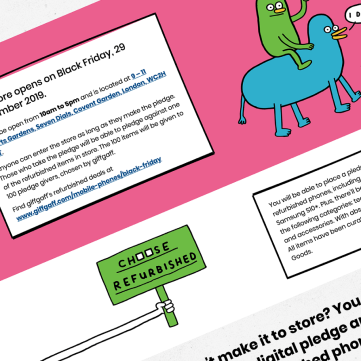
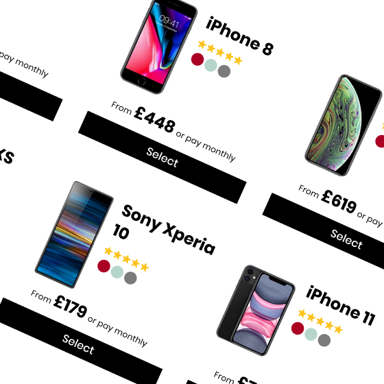

ui/ux
I am Ollie Williams, a London-based ux/ui designer.
I'm currently doing design work on a web application for a cybersecurity company. Previously I was building a design system at giffgaff — the mobile network “run by you”. Prior to that I was working on Nature.com, home to 148 academic journals, including Nature — the world's most cited scientific journal.
I often write about design tooling, CSS, and user experience, some of which I have collected on this site.
Writing
- UX Considerations for Web Sharing
- Using the new data feature in Sketch 52
- Front-End Documentation, Style Guides and the Rise of MDX
- One File, Many Options: Using Variable Fonts on the Web
- Finger-friendly numerical inputs with `inputmode`
- Using Performant Next-gen Images in CSS with image-set
- CSS Logical Properties and Values
- The Expanding Gamut of Color on the Web
- Styling Links with Real Underlines
- It All Started With Emoji: Color Typography on the Web
- CSS Animations vs Web Animations API
- Slanted CSS for a more intriguing looking page